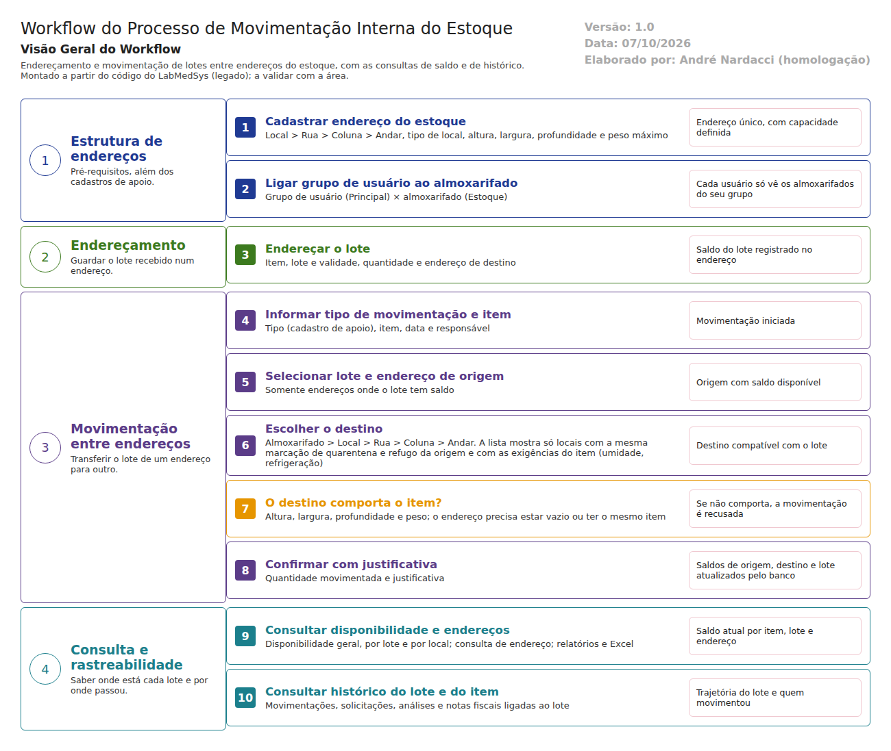

Objetivo
Este documento descreve o fluxo de movimentação interna do estoque no LabMedSys: o cadastro dos endereços, o endereçamento do lote, a transferência entre endereços e as consultas de saldo e de histórico.
Foi montado a partir do código do sistema legado (não de reunião com a área). Descreve o que o sistema faz; o que depende da prática da área está marcado como a validar. Serve de base para a homologação nas telas: os casos de teste estão no fim.
Escopo
- Cadastro e manutenção dos endereços do estoque (local, rua, coluna, andar e capacidade).
- Endereçamento do lote num endereço.
- Movimentação do lote entre endereços, inclusive entre locais e almoxarifados.
- Consultas de disponibilidade, de endereço e de histórico do lote e do item.
Nomes das telas: os documentos usam o nome que aparece no alto de cada tela, que normalmente é o do menu. As referências ao código (arquivo:linha) ficam só nas regras, para conferência pelos desenvolvedores.
Fora do escopo: o recebimento e a quarentena (fluxos já documentados pela equipe), a liberação pelo Controle da Qualidade e as saídas para a produção, que têm fluxos próprios.
Pré-requisitos: os cadastros de apoio (3.estoque/01-cadastros-de-apoio.md): almoxarifado, locais de armazenagem com as marcações de quarentena, controlado, refrigerado, umidade e refugo, rua, coluna, andar, tipo de movimentação e item.
Visão geral do processo

O processo começa com a estrutura de endereços. Cada endereço é a combinação de local, rua, coluna e andar, com capacidade em altura, largura, profundidade e peso. Os usuários só enxergam os almoxarifados ligados ao seu grupo de usuário.
No endereçamento, o lote recebido é guardado num endereço, com quantidade, lote e validade. Na movimentação, o usuário escolhe o lote e o endereço de origem com saldo e indica o destino. O sistema confere se o destino comporta o item e, ao confirmar com justificativa, o banco de dados atualiza sozinho os saldos do endereço de origem, do destino e do lote, além do custo e do saldo diário.
As consultas mostram o saldo atual por item, lote e local e a trajetória do lote.
Descrição funcional das etapas
"A numeração das regras de negócio é reiniciada em cada atividade, visando facilitar sua identificação e manutenção."
Cadastro do endereço do estoque
Define os endereços físicos onde os lotes podem ser guardados.
Regras de negócio
- RN001 – O endereço exige local de armazenagem, rua, coluna, andar e tipo de local (
LaboSys_UI/estoque/endereco_ed.aspx, validadores). - RN002 – O endereço exige altura, largura, profundidade e peso máximo; esses valores limitam o que pode ser guardado nele (ver RN004 da movimentação).
- RN003 – Não pode haver dois endereços iguais: a inclusão repetida é recusada com "Não foi possível incluir o endereço. Verifique se o mesmo já existe" (
endereco_ed.aspx.cs:333). A mensagem genérica não diz o motivo. - RN004 – Um endereço com saldo de item não pode ser excluído: "O Registro não pode ser excluido pois possui item em estoque associado" (
endereco_lst.aspx.cs:380). - RN005 – Alteração e exclusão exigem justificativa e ficam no histórico.
Telas do sistema
| Módulo | Tela | Finalidade |
|---|---|---|
| Estoque | Endereço | Cadastro dos endereços e da capacidade |
| Estoque | Endereço do Item | Ver em que endereço está cada item |
| Estoque | Grupo de Usuário - Almoxarifado | Quais almoxarifados cada grupo enxerga |
Endereçamento do lote
Guarda o lote num endereço do estoque.
Regras de negócio
- RN001 – Exige item, lote e validade, quantidade, almoxarifado, local, rua, coluna e andar (
estoque/enderecamento_ed.aspx, validadores "Item não foi selecionado!", "O Lote/Validade não foi selecionado!", "Quantidade inválida!", "Endereço inválido!"). - RN002 – O saldo do lote no endereço é gravado pelo banco (gatilho
trAllLLoteEnderecoemTBL_LOTE_ENDERECO). - RN003 – A validar com a área: o endereçamento é feito aqui ou já no recebimento (o fluxo de Recebimento da equipe inclui a etapa "Armazenamento")? Registrar no teste qual caminho o sistema usa.
Telas do sistema
| Módulo | Tela | Finalidade |
|---|---|---|
| Estoque | Endereçamento | Guardar o lote num endereço |
Movimentação entre endereços
Transfere o lote, total ou parcialmente, de um endereço para outro.
Regras de negócio
- RN001 – Exige tipo de movimentação, item, lote, endereço de origem, quantidade, endereço de destino e justificativa (
estoque/movimentacao_ed.aspx, validadores). - RN002 – A origem precisa ter saldo: "O endereço de origem não tem saldo disponível!"; a quantidade precisa ser válida e respeitar o fracionamento do item.
- RN003 – O endereço de destino precisa estar vazio ou conter o mesmo item; um endereço não guarda itens diferentes (
movimentacao_ed.aspx.cs:577). - RN004 – O item precisa caber no destino: altura, largura, profundidade e peso (peso do item × quantidade). Se não couber: "A altura do item excede a capacidade do endereço!", e assim por diante (
movimentacao_ed.aspx.cs:581-593). - RN005 – O mesmo endereço não pode estar em duas movimentações ao mesmo tempo: "Endereço já informado em outra movimentação!" (
movimentacao_ed.aspx.cs:681). - RN006 – A lista de destinos mostra só locais com a mesma marcação de quarentena e de refugo da origem e compatíveis com as exigências do item (umidade e refrigeração), dentro dos almoxarifados do grupo do usuário (
movimentacao_ed.aspx.cs:858). - RN007 – Ao confirmar, o banco atualiza sozinho o saldo do endereço de origem e do destino, o saldo do lote, o custo e o saldo diário (gatilho
trAllMovimentacaoItememTBL_MOVIMENTACAO_ITEM).
Telas do sistema
| Módulo | Tela | Finalidade |
|---|---|---|
| Estoque | Movimentação de Material | Transferência entre endereços |
| Estoque | Tipo de Movimentação | Define o sentido e o efeito da movimentação |
Pontos de atenção encontrados no código
- A trava de quarentena foi desligada. A regra que recusava levar um lote de um endereço de quarentena para um endereço comum ("O endereço de destino deve ser Quarentena!") foi substituída por
if (true)e nunca dispara (movimentacao_ed.aspx.cs:579e:601). Hoje, só a lista de destinos (RN006) impede essa saída. Ou seja, a proteção do lote em quarentena depende só da tela, e o servidor não confere. A RDC 658/2022 exige que o material fique em quarentena até a liberação pelo Controle da Qualidade. - Validações desligadas. As checagens de grupo ("ItemLoteEndereco", "EnderecoDestino", "ItemCodigo", "ItemLote", "FormValidacao") estão comentadas no salvamento (
movimentacao_ed.aspx.cs:685-697). É preciso testar se os campos ainda são conferidos. - Saldos atualizados só pelo banco. O gatilho atualiza os saldos sem registro próprio de quem fez; a autoria fica só na movimentação. A confirmar no teste: o histórico do lote mostra o usuário e a justificativa?
Consultas e rastreabilidade
Regras de negócio
- RN001 – As consultas de disponibilidade (geral, por lote e por local) mostram o saldo por item, lote e local, com relatório e Excel; não alteram dados.
- RN002 – O histórico do lote reúne movimentações, solicitações, análises do Controle da Qualidade, amostras e notas fiscais ligadas ao lote (tela Histórico do Lote).
- RN003 – O histórico do item reúne as mesmas informações por item, incluindo pesagens e remessas (tela Histórico do Item).
- RN004 – A validar: as consultas respeitam o grupo do usuário (só os almoxarifados dele)?
Telas do sistema
| Módulo | Tela | Finalidade |
|---|---|---|
| Estoque | Disponibilidade de Estoque | Saldo geral |
| Estoque | Disponibilidade do Lote | Saldo por lote |
| Estoque | Disponibilidade do Lote por Local | Saldo por local |
| Estoque | Histórico do Lote | Trajetória do lote |
| Estoque | Histórico do Item | Trajetória do item |
Casos de teste
Dados: os criados nos cadastros de apoio (TESTE ALMOX, locais TESTE LOCAL NORMAL, TESTE LOCAL QUARENTENA, CONTROLADO e REFRIGERADO, rua, coluna e andar TESTE, TESTE MATERIA PRIMA) e um lote TESTE-LOTE-001 recebido pelo fluxo de Recebimento. Todos ficam no sistema.
| Caso | O que fazer | Resultado esperado |
|---|---|---|
| CT-EST-030 | Cadastrar endereços TESTE em cada local (normal, quarentena, controlado, refrigerado) com capacidade pequena num deles |
Endereços criados; aparecem na consulta de endereço |
| CT-EST-031 | Cadastrar um endereço repetido | Recusa (RN003); registrar se a mensagem explica o motivo |
| CT-EST-032 | Excluir um endereço com saldo e outro vazio | O primeiro é recusado; o segundo é excluído com justificativa |
| CT-EST-033 | Endereçar o TESTE-LOTE-001 sem lote, sem quantidade e com quantidade zero; depois completo |
Recusas; completo, o saldo aparece na disponibilidade por lote e por local |
| CT-EST-034 | Movimentar parte do lote entre dois endereços do local normal, com justificativa | Saldos de origem e destino atualizados; aparece no histórico do lote com usuário, data e justificativa |
| CT-EST-035 | Movimentar sem justificativa | Recusa |
| CT-EST-036 | Movimentar quantidade maior que o saldo da origem | Recusa: "O endereço de origem não tem saldo disponível!" |
| CT-EST-037 | Movimentar para um endereço que já tem outro item | Recusa (RN003) |
| CT-EST-038 | Movimentar para o endereço de capacidade pequena uma quantidade que excede o peso | Recusa por capacidade (RN004) |
| CT-EST-039 | Lote em quarentena: abrir a movimentação de um lote que está no TESTE LOCAL QUARENTENA e ver quais locais aparecem no destino |
Só locais de quarentena (RN006). Registrar com evidência se algum local comum aparece, porque a trava do servidor está desligada |
| CT-EST-040 | Item refrigerado: movimentar um item marcado como refrigerado | O destino oferece só locais refrigerados |
| CT-EST-041 | Usuário de outro grupo: entrar com usuário sem o TESTE ALMOX no grupo |
Não vê o almoxarifado na movimentação nem nas consultas |
| CT-EST-042 | Duas movimentações do mesmo endereço ao mesmo tempo (duas abas) | A segunda é recusada (RN005) |
| CT-EST-043 | Consultas: disponibilidade geral, por lote e por local; relatório e Excel | Saldos batem com as movimentações feitas |
| CT-EST-044 | Histórico do lote TESTE-LOTE-001 |
Mostra recebimento, endereçamento e movimentações, na ordem, com usuário |
| CT-EST-045 | Permissão: usuário sem acesso à movimentação abre a tela pelo endereço | Acesso negado |